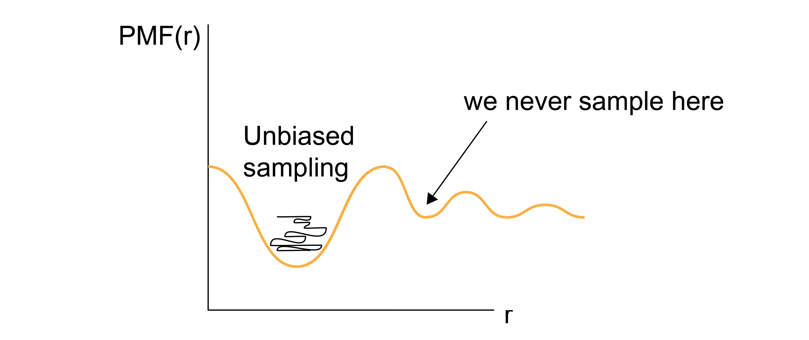

Umbrella Sampling#
Additional Readings for the Enthusiast#
Frenkel and Smit [2], Ch. 7.4
Goals for Today’s Lecture#
Understand how to bias simulations towards coordinates of interest
Relate biased probability distributions to unbiased ones
Umbrella sampling#
The PMF is a very useful quantity for calculating equilibrium free energy changes associated with processes that involve a well-defined reaction coordinate. To calculate the PMF, however, the probability associated with a specific value of the reaction coordinate, \(p(x')\), must be determined.
In principle, this probability distribution could be calculated by simply generating system configurations within the entire accessible phase space (using either standard molecular dynamics with correct thermostatting or via Monte Carlo sampling, for example) and calculating how frequently the desired values of the reaction coordinate are observed.
What are some drawbacks of stochastically sampling the phase space to analyze reaction coordinates?
Click for answer
This brute force approach is very unlikely to sample states efficiently, as the vast majority of simulation time would be spent computing configurations for the high-probability values of \(x'\).
If any value of the reaction coordinate exists in a region of phase space that is nearly inaccessible (i.e., the reaction coordinate sits at the top of a free energy barrier), then it is likely that the value may never be determined via a brute force approach, and therefore the free energy cannot be accurately sampled.

One solution to overcome the sampling problem and facilitate the calculation of the probability densities of interest (and thus the PMF) is to apply a bias to the system dynamics - that is, apply unphysical forces that will enforce sampling of desired values of reaction coordinate. In one popular technique, known as
- umbrella sampling#
an advanced sampling technique where a set of weight functions are defined and added to the system potential energy function.
Consider the case where we want to sample a system near \(x\). For an independent simulation \(i\), we define \(w_i(x) \equiv w_i[x(\mathbf{r}^N)]\) as the weight function about x; conventionally, the weight function is harmonic (although other functional forms are reasonable) such that :
where \(k\) is the spring constant and \(x_i\) is the value about which the system is restrained. The potential energy function of the system is then given by \(E(\mathbf{r}^N) + w_i(x)\), such that the weight function significantly increases the energy of any configurations with values of the reaction coordinate that differ significantly from the restrained value \(x_i\).
In other words, we effectively add a fictitious force (a spring force) that is not meant to model a physical force in the system, but rather is added solely to force the system to sample a particular value of the reaction coordinate. Conceptually, the idea behind this is to effectively “flatten” the free energy landscape by forcing the system to explore a local region near \(x_i\), thus allowing the sampling of values of \(x_i\) that would not be explored in an unbiased simulation.
We can now write the biased probability of finding the system at a particular value of the reaction coordinate \(x(\mathbf{r}^n) = x'\) for the \(i\)th simulation using the modified potential energy function:
The delta function selects only values of \(x(\mathbf{r}^N) = x'\), so if \(x' \approx x_i\), then \(p_{\textrm{bias},i}(x')\) will be large; otherwise, the weight function will lead to large values of the total energy and thus negligible values of \(p_{\textrm{bias},i}(x')\). We can sample this probability distribution directly in a simulation by adding the weight function to the system dynamics (i.e., adding a spring force to relevant particles) to increase sampling of the value \(x'=x_i\). However, we need to sample the unbiased probability to calculate the potential of mean force, so we need to relate \(p_{\textrm{bias},i}(x')\) to \(p(x')\). Relating the biased probability distribution to the unbiased probability distribution will be the focus of the next lecture.
Relating the biased probability distribution to the unbiased one#
We showed how to write the biased probability of finding the system at a particular value of the reaction coordinate \(x(\mathbf{r}^N) = x'\) for the \(i\)th simulation using the modified potential energy function:
The delta function selects only values of \(x(\mathbf{r}^N) = x'\), so if \(x' \approx x_i\), then \(p_{\textrm{bias},i}(x')\) will be large; otherwise, the weight function will lead to large values of the total energy and thus negligible values of \(p_{\textrm{bias},i}(x')\). We can sample this probability distribution directly in a simulation by adding the weight function to the system dynamics (i.e., adding a spring force to relevant particles) to increase sampling of the value \(x'=x_i\). However, we need to sample the unbiased probability to calculate the potential of mean force, so we need to relate \(p_{\textrm{bias},i}(x')\) to \(p(x')\). To do so, we can first rewrite the biased probability distribution as:
By inspecting the second term we see that it is an integral over all phase space of \(e^{-\beta w_i(x)}\) multiplied by a Boltzmann weight; this is exactly the expression for the ensemble average \(\langle e^{-\beta w_i(x)} \rangle\), so we simplify to:
Next, we can recognize that the delta function in the integral selects only those states for which \(x(\mathbf{r}^N) = x'\) (unlike the previous ensemble average, where the integral includes all values of \(\mathbf{r}^N\) and thus all values of \(x(\mathbf{r}^N)\)). As a result, the value of the weight function can set to \(e^{-\beta w_i(x')}\) and removed from the integral, yielding:
Note that we are being careful to distinguish between the value of the weight function for a specific value of the reaction coordinate, \(e^{-\beta w_i(x')}\), which is analytically defined, and the ensemble-average value of the weight function for all possible values of the reaction coordinate, \(\langle e^{-\beta w_i(x)} \rangle\), which will depend on the entire phase space. We can then rearrange this expression for the unbiased probability to write:
This expression thus relates the biased probability distribution from the \(i\)th biased simulation to the unbiased probability distribution. We can then write the value of the PMF, \(F_i(x')\) associated with \(x'\) based on the \(i\)th simulation (i.e., the simulation with a bias applied to \(x_i\)) as:
Let’s consider each of these terms in turn.
The first term, \(\textcolor{red}{-k_BT \ln \left [p_{\textrm{bias}, i}(x') \right ]}\), can be estimated directly from the \(i\)th biased molecular simulation for which the weight function will restrain the simulation to sample configurations with \(x(\mathbf{r}^N) \approx x_i'\), allowing \(p_{\textrm{bias}, i}(x')\) to be calculated even if \(x'\) is normally not sampled in an unbiased simulation. The second term, \(\textcolor{orange}{w_i(x')}\), is calculated analytically since the expression for the weight function is specified. The fourth term, \(\textcolor{blue}{-k_BT \ln Z}\), is a constant that does not depend on \(x'\) and can be eliminated by only consider differences in the PMF. The third term, \(\textcolor{green}{- k_BT \ln \langle \exp \left [ -\beta w_i(x) \right ] \rangle}\) is the ensemble average of the exponential weight function for \(x'\) sampled from the unbiased ensemble. As we will show below, this term is equal to the free energy cost associated with introducing the weight function.
We can define this term as \(\textcolor{green}{K_i=- k_BT \ln \langle \exp \left [ -\beta w_i(x) \right ] \rangle}\) to write our final expression as:
This final expression is a powerful approach for computing values of the PMF as follows. We first define a set of harmonic weight functions, each centered on some value \(x_i\) such that the total set of restrained values spans the values of \(x\) that are of interest. An independent simulation is then performed for each value of \(x_i\) and \(p_{\textrm{bias}, i}(x')\) is estimated for all \(x'\) (typically by histogramming). The unbiased PMF for \(x'\) is then computed from the \(i\)th simulation using the expression above. By only considering differences in the PMF, the \(- k_BT \ln Z\) term drops out, leaving only the set of \(K_i\) to be determined for the entire PMF to be specified. However, we can compute the set of \(K_i\) by recognizing that the value of the unbiased PMF, \(F_i(x')\), should be independent of the value of \(x_i\) that is biased. Thus, we can compute \(F_i(x')\) for the same \(x'\) from several different biased simulations (i.e. different biased values of \(x_i\)) and adjust the values of \(K_i\) such that the estimate for \(F(x')\) matches across all biased windows. This approach requires that the biased simulations overlap - that is, that there is a non-negligible value of \(p_{\textrm{bias}, i}(x')\) for the same value of \(x'\) sampled in each of the overlapping windows. In practice, this means that the harmonic weight function must allow the system to sample configurations slightly different from \(x_i\) to ensure that \(x'\) can be sampled in multiple different biased simulations.

So, to recap: umbrella sampling allows us to calculate the PMF (i.e. the change in the free energy) associated with any arbitrary process by sampling configurations associated with different values of a reaction coordinate associated with the process. The key advantage of the umbrella sampling approach is that any value of the reaction coordiante can be sampled by applying weight functions, thus enabling the estimate of the PMF even for very low probability (high free energy) states. From a computational standpoint, this method requires a series of independent simulations to be performed and then free energies to be determined by matching estimates of the PMF from overlapping biased simulations. The requirement of overlap renders this technique inefficient computationally, although more efficient methods (such as the Weighted Histogram Analysis Method) have been developed to compute the set of \(K_i\). These techniques are outside the scope of this discussion. Umbrella sampling is very commonly used to compute PMFs for processes with large energy barriers, such that the processes cannot be directly observed in unbiased simulations. For example, one could apply umbrella sampling to calculate the free energy change associated with adsorbing a molecule to a surface by defining the distance to the surface as the reaction coordinate, choosing multiple values of this distance, then performing multiple independent simulations in which the molecule of interest is restrained to each value of the reaction coordinate using a harmonic spring.